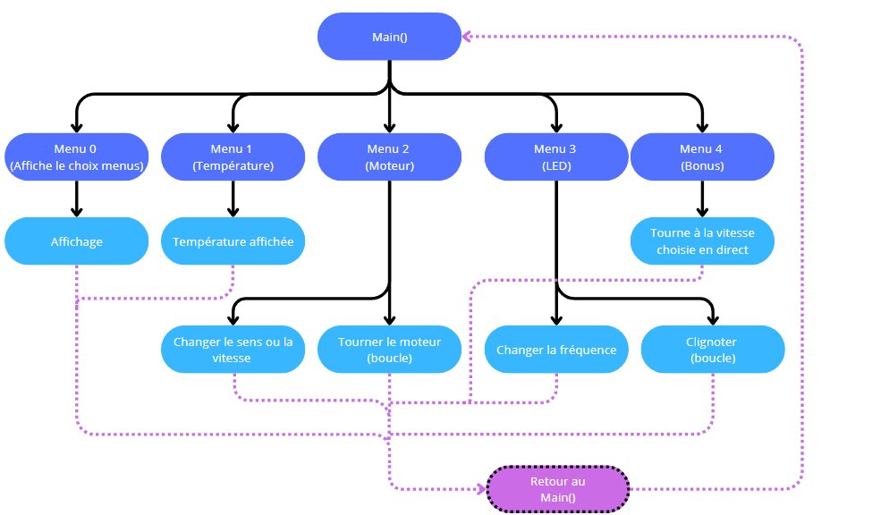
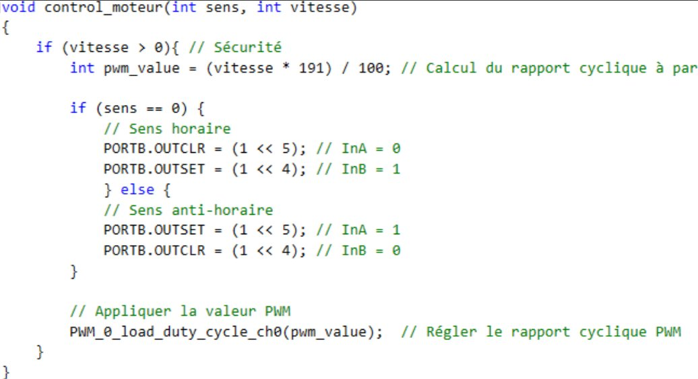

01Contexte
Module « Systèmes embarqués » : concevoir un banc de test moteur autour d'un microcontrôleur AVR. La carte pilote un moteur à courant continu, mesure une température et dialogue avec un PC par liaison série.
02Mon rôle
Projet en binôme : nous avons fait ensemble le schéma, le routage et le code. Les programmes étaient développés en C sous Microchip Studio, à partir d'une configuration générée par Atmel START.
03La carte électronique
- Microcontrôleur AVR128DB48, programmé et alimenté par USB.
- Pont en H VNH7070 pour commander le moteur (sens et vitesse en PWM, alimentation 12 V).
- Thermistance CTN en pont diviseur, lue par le convertisseur analogique-numérique.
- Liaison UART vers le PC.
La carte a été conçue sous EAGLE, du schéma au routage, jusqu'à la génération des fichiers Gerber pour la fabrication.

04Le code embarqué
- Programmation en C bas niveau : registres des ports, PWM, ADC 12 bits, interruptions.
- Un menu sur terminal série : lecture de la température, réglage de la vitesse et du sens du moteur, clignotement de LED avec arrêt par bouton (interruption).
- Calcul de la température à partir de la tension mesurée (pont diviseur, puis équation de Steinhart-Hart).


05Ce que j'en retiens
- La chaîne complète d'une carte embarquée : choix des composants, schéma, routage, Gerber, puis code.
- Ces bases m'ont servi l'année suivante pour les cartes IHM et de puissance du préhenseur mécatronique.